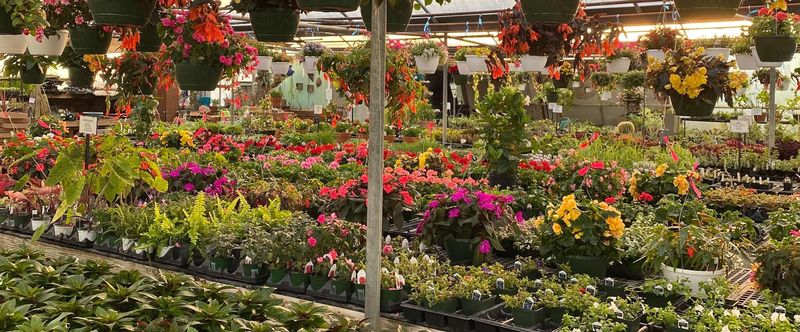

How to Plant a Pollinator Garden in Indiana for Bees, Butterflies and Hummingbirds
Native flowers from spring to frost, milkweed for monarchs, places for bees to nest, and a gentler approach to pests.

A pollinator garden is one of the most rewarding things you can plant. Within a season, you'll see bumblebees working the coneflowers, butterflies on the asters, and hummingbirds visiting the bee balm. You'll also be helping insects that are essential for fruits, vegetables and wild plants. This guide shows how to plan one for central Indiana.
Who are the pollinators?
When people say "pollinators," they often mean honeybees, but the list is much longer:
- Native bees: bumblebees, mason bees, leafcutter bees, sweat bees, mining bees and many more. Most are solitary, nest in the ground or in hollow stems, and rarely sting.
- Honeybees: managed by beekeepers. Our greenhouse hosts monthly info meetings with the Montgomery County beekeepers; see events.
- Butterflies and moths, including the monarch.
- Hummingbirds: the ruby-throated hummingbird is a summer resident in Indiana.
- Flies, beetles and wasps, many of which visit flowers.
The USDA Forest Service pollinator pages are a good introduction.
Four principles of a pollinator garden
1. Bloom from spring to frost
Pollinators need food all season, from the first bees in March to migrating monarchs in October. A garden full of June flowers with nothing in August won't support them. Plan for at least three plants blooming in each season.
2. Plant natives as the backbone
Native plants and native insects evolved together. Many native bees prefer, or depend on, specific native flowers, and most butterfly and moth caterpillars can eat only certain native plants. Non-native flowers can be good nectar sources, but natives support the whole life cycle.
3. Plant in groups
Pollinators find flowers more efficiently when they're planted in clumps of three or more of the same plant, rather than scattered singles. Drifts also look better.
4. Go easy on pesticides
Many insecticides, including some labeled for home gardens, harm bees and butterflies. If you must treat a problem, choose the most targeted option, spray in the evening when bees aren't flying, and never spray open flowers.
Milkweed: the monarch essential
Monarch caterpillars eat only milkweed. Without it, there are no monarchs. Two natives are especially garden-friendly:
- Swamp milkweed (Asclepias incarnata): pink flower clusters in summer, clump-forming, for average to moist soil. Despite the name, it grows fine in regular garden beds.
- Butterfly weed (Asclepias tuberosa): brilliant orange flowers, a deep taproot, and loves dry, sunny, well-drained spots.
Plant several milkweeds together, and expect caterpillars to eat them. That's the point. The Monarch Joint Venture has more on monarch conservation.
Plants for every season
Spring (March–May)
Early bees emerge hungry and need early flowers.
- Creeping phlox: carpets of spring color
- Columbine: a native hummingbird favorite
- Lungwort: one of the earliest flowers in shade
- Spring bulbs like crocus and alliums
- Flowering trees and shrubs: redbud, crabapple, serviceberry, fruit trees
- Hellebore: blooms when almost nothing else does
Early summer (June)
- Perennial salvia: bees love the violet spikes
- Catmint: constant bee traffic
- Blue false indigo: a native, long-lived favorite of bumblebees
- Penstemon: native and adored by hummingbirds
- Coreopsis: long-blooming and native
Midsummer (July)
- Coneflower: a top native for bees and butterflies
- Bee balm: native, a hummingbird magnet
- Blazing star (liatris): native spikes for butterflies
- Butterfly weed and swamp milkweed
- Agastache: long-blooming and aromatic
- Oregano and thyme in flower: herbs that buzz with insects
Late summer and fall (August–October)
The most important season for migrating monarchs and for bumblebee queens building up for winter.
- New England aster: the essential native fall flower
- Goldenrod: a vital fall food source. It doesn't cause hay fever; ragweed, which blooms at the same time, does.
- Perennial sunflower: hundreds of yellow flowers
- Sedum: late flowers that bees love
- Black-eyed Susan
- Obedient plant and turtlehead for moist spots
Annuals and herbs that help
Annuals fill gaps and bloom nonstop:
- Zinnias, cosmos and sunflowers for butterflies
- Lantana, a butterfly favorite in containers
- Annual salvia and cuphea for hummingbirds
- Herbs left to flower, including basil, dill, fennel and parsley. Dill, fennel and parsley are host plants for black swallowtail caterpillars, so plant extra.
Flowers for hummingbirds
Hummingbirds favor tubular flowers, often red or orange:
- Native: cardinal flower, bee balm, columbine, Indian pink, penstemon, trumpet creeper
- Garden favorites: salvias, agastache, cuphea, red hot poker, honeysuckle vine, fuchsia, weigela
Shrubs and trees for pollinators
Woody plants provide large amounts of nectar and pollen, and host many caterpillars:
- Oaks support a huge number of caterpillar species, which in turn feed birds
- Summersweet and sweetspire: fragrant summer flowers, native
- Ninebark, elderberry and bush honeysuckle (Diervilla): native shrubs
- Viburnum and redbud
A note on butterfly bush: it's a popular nectar source, but it doesn't host caterpillars, and some forms reseed. Native alternatives work just as well for adult butterflies.
Water, shelter and nesting
Food is only part of habitat.
- Water: a shallow dish with stones for landing, refilled regularly, helps bees and butterflies.
- Bare ground: most native bee species nest in the ground. Leave a sunny patch of bare, undisturbed soil without mulch.
- Stems: leave hollow and pithy stems standing through winter, and cut them to 12 to 18 inches in spring. Many small bees nest inside.
- Leaves: leave a layer of leaves under shrubs and in beds where possible. Many butterflies and moths overwinter there as eggs, caterpillars or pupae.
- Shelter: shrubs and grasses give insects protection from wind and predators.
Designing a pollinator bed
- Pick a sunny spot. Most pollinator plants need at least six hours of sun.
- Start with a shape at least 4 feet deep so you can layer plants.
- Put tall plants at the back (perennial sunflower, Joe Pye weed, goldenrod), medium plants in the middle (coneflower, bee balm, liatris, milkweed), and short plants in front (catmint, coreopsis, sedum).
- Plant in groups of three to seven.
- Mix flower shapes: flat daisies for butterflies, tubes for hummingbirds and long-tongued bees, spikes and clusters for everyone.
- Add a grass or two, like switchgrass, for structure and shelter.
A starter plan for a 4×12 sunny bed
| Back row | Middle row | Front row |
|---|---|---|
| New England aster (3) | Coneflower (5) | Catmint (3) |
| Perennial sunflower (1) | Swamp milkweed (3) | Coreopsis (3) |
| Goldenrod 'Fireworks' (2) | Bee balm (3) | Butterfly weed (3) |
| Switchgrass (1) | Blazing star (5) | Sedum (3) |
That's bloom from June to October, monarch host plants, hummingbird flowers, and winter structure.
Pest control without harming pollinators
- Tolerate some damage. Holes in leaves usually mean the garden is working.
- Identify before you treat. Many insects are harmless or beneficial.
- Hand-pick larger pests like Japanese beetles into soapy water in the morning.
- Use targeted options like insecticidal soap on pests, and never on open flowers.
- Avoid systemic insecticides on flowering plants, which can be taken up into nectar and pollen.
Leave the leaves (and the stems)
Many native bees and other pollinators spend winter in the garden. Bumble bee queens shelter in loose soil and leaf litter; some bees nest in hollow or pithy stems; butterflies and moths overwinter as eggs, caterpillars or chrysalises tucked into leaves and stems. A tidy fall cleanup throws much of that away.
- Leave leaves in perennial beds and under shrubs rather than bagging them.
- Leave perennial stems standing through winter. In spring, cut them back to varying heights, 8 to 24 inches. Hollow stems left standing become nesting sites for stem-nesting bees, and new growth soon hides them.
- Wait to clean up until temperatures are consistently above 50°F in spring, when overwintering insects have emerged.
A pollinator garden in containers
No yard? A few large pots on a sunny patio or balcony can still feed pollinators. Choose compact plants that bloom over a long season: lantana, zinnias, salvia, verbena, dwarf asters and herbs such as oregano, thyme, basil (allowed to flower) and chives. Use the largest pots you can, since bigger containers dry out more slowly, and group them so pollinators find them.
Checking plant labels
When you shop for pollinator plants, look for single flowers over heavily doubled ones, since doubled blooms often have less accessible pollen and nectar. Ask whether plants were treated with systemic insecticides, and when in doubt choose straight species or native cultivars that keep the same flower form and color as the wild plant.
Start planting
Spring and fall are both good times to plant a pollinator garden. Look for plants marked "Indiana native" and "Pollinator favorite" in our plant catalog. Each page notes what visits it and how to grow it here. For more ideas, see the best perennials for central Indiana and our deer-resistant plant guide.
Frequently asked questions
What should I plant for monarch butterflies in Indiana?
Milkweed is essential. It’s the only plant monarch caterpillars eat. Swamp milkweed (for moist to average soil) and butterfly weed (for dry, sunny spots) are both native and garden-friendly. Add nectar flowers that bloom in late summer and fall, such as New England aster, liatris, goldenrod and coneflower, to fuel migrating adults.
Do pollinator gardens need to be all native plants?
No, but natives should be the backbone. Native plants support native bees and the caterpillars of native butterflies and moths in ways most non-natives can’t. Many non-native garden flowers, like zinnias, lantana and catmint, are still excellent nectar sources.
How big does a pollinator garden need to be?
Any size helps. Even a few containers of flowers on a patio feed bees and butterflies. A bed of 50 to 100 square feet with a variety of plants blooming from spring to fall makes a real difference.
Will a pollinator garden attract stinging bees to my house?
Most bees visiting flowers are focused on foraging and are not aggressive. Many native bees are solitary and rarely sting. Place the garden a little away from doors and play areas if you’re concerned.
Should I clean up my pollinator garden in the fall?
Hold off. Leave stems and seed heads standing over winter. Many native bees and other insects overwinter in hollow stems and leaf litter. Cut stems back in spring, leaving 12 to 18 inches of stubble, which some bees use for nesting.
Further reading & sources
Questions about your own garden? Call us at (765) 364-0556 or stop by the greenhouse. Bring photos.
Plants in this article
Find them in the catalog
Keep reading
More from the journal

Trees & shrubs 9 min read
Choosing and Planting Trees for Indiana Yards: A Practical Guide
Planning 8 min read
Fall Planting in Indiana: Why September and October Are Secret Planting Seasons

Flowers & perennials 8 min read